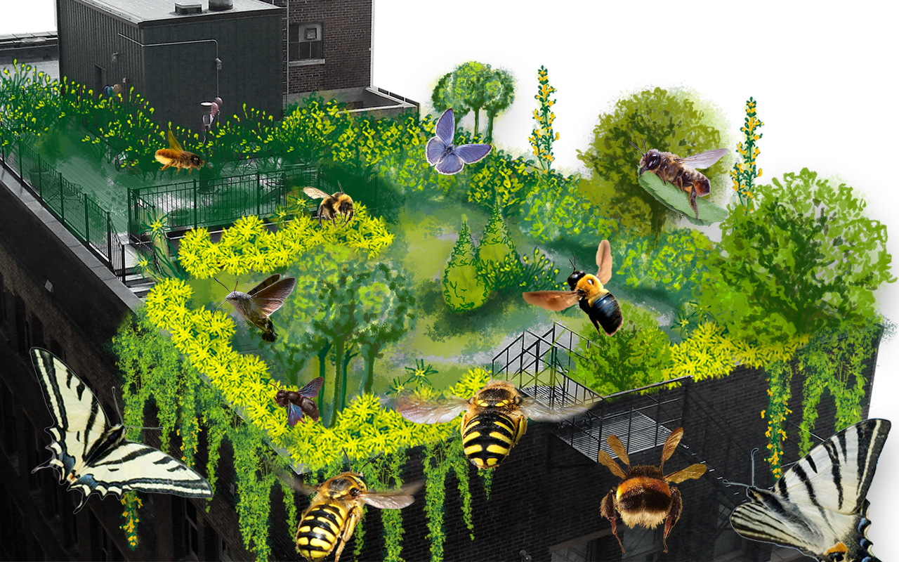

La perdita di biodiversità
Il nostro rapporto con gli insetti si fonda sulla paura, dettata spesso dalla poca conoscenza che abbiamo di questi esseri viventi. Il sospetto e l’apprensione che proviamo quando avvistiamo una vespa o un calabrone ci preclude da sempre la possibilità di comprendere il loro importante ruolo all’interno dell’ecosistema. Nonostante siano invisibili all’occhio umano, il ruolo degli insetti impollinatori risulta fondamentale per la sopravvivenza di moltissime specie vegetali. L’80% delle piante dipende infatti dall'impollinazione degli insetti. Molte persone presumono che solo le api da miele siano responsabili dell’impollinazione delle nostre colture. Conosciute dall’uomo da milioni di anni grazie al miele che producono, le api mellifere rappresentano nell’immaginario comune le uniche responsabili dell’impollinazione. Nonostante tale credenza, nelle Alpi sono presenti più di 700 specie di api solitarie, responsabili non solo della biodiversità del paesaggio alpino ma anche dell’impollinazione delle nostre coltivazioni. La varietà di specie è tanto ampia quanto quella delle piante che provvedono a impollinare. Ciò che le accomuna è il contributo essenziale all’impollinazione delle piante nei prati e nei nostri campi, nei giardini e nei boschi.

Questa forte connessione è essenziale anche per l’uomo. La maggior parte delle specie coltivate di fiori e frutti dipendono infatti dall’interazione fra questi organismi. È dunque importante non dimenticare o sottovalutare i delicati equilibri presenti negli ecosistemi, messi purtroppo a dura prova dal nostro inquinamento, dal surriscaldamento globale e dalla deforestazione massiva. È un complesso linguaggio che lega piante e animali che le specie selvatiche sono riuscite a mantenere intatto. Un modo efficace per supportare questo equilibrio in un contesto urbano, è fornire nicchie sicure, ricche di risorse e rifugio per fiori e insetti impollinatori.

Come individui abbiamo un ruolo fondamentale nella salvaguardia della biodiversità urbana; balconi, giardini facciate e tetti possono rappresentare un grande contributo, assicurando un habitat e fornendo nutrimento dalla primavera fino all’autunno inoltrato. Murmur propone una visione di città dove il benessere dell’uomo dipende dall’equilibrio e dal benessere dell’ecosistema.